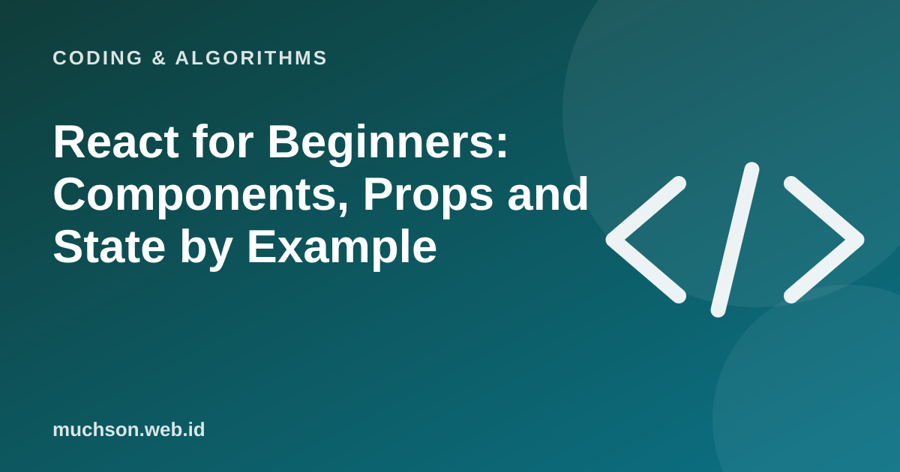

Home › Articles › Coding & Algorithms
Coding & AlgorithmsReact for Beginners: Components, Props and State by Example
React builds an interface out of small, reusable pieces. If you master three ideas, components, props and state, most React code will read sensibly. The rest is variation.

Three core ideas
Text description of the diagram
- Component: A reusable piece of UI (a button, a card, a form)
- Props: Data passed from parent to child component (read-only)
- State: Data owned by the component that can change and trigger a redraw
The smallest example
function Greeting({ name }) { // props: name
return <h2>Hello, {name}!</h2>;
}
function Counter() {
const [count, setCount] = useState(0); // state
return (
<div>
<p>Clicked {count} times</p>
<button onClick={() => setCount(count + 1)}>Add</button>
<Greeting name="Dewi" />
</div>
);
}Every time setCount is called, React redraws the component with the new value. You do not change the page by hand; you change the data, and the view follows.
Common beginner mistakes
FAQ
Is React a framework or a library?
Officially it is a library for building UI. Many projects combine it with other tools (a router, a data manager) or use a React-based framework.
Do I need to learn JavaScript first?
Yes. A strong grounding in JavaScript makes React much easier.
What is a hook?
A special function such as useState and useEffect that adds abilities like state and side effects to function components.